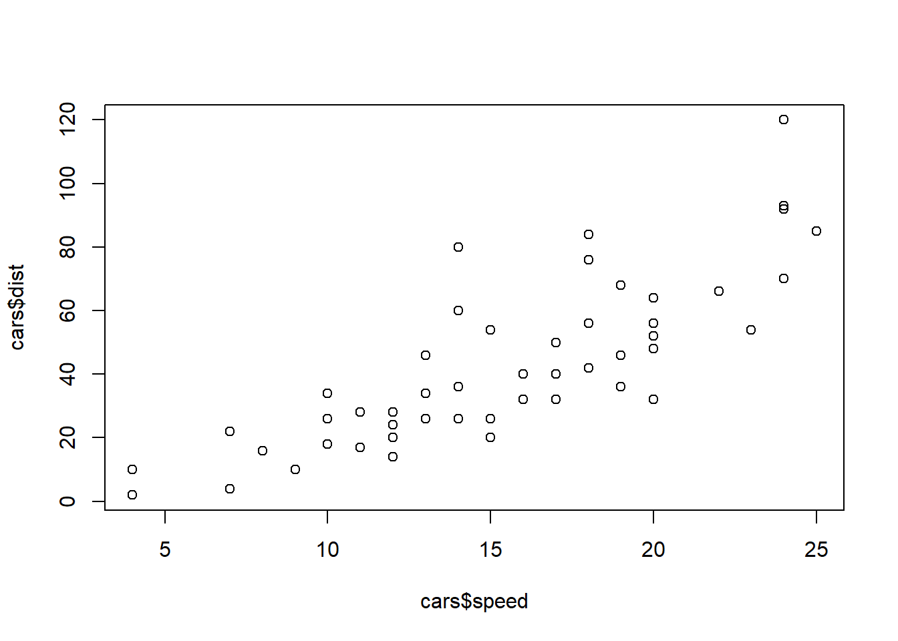
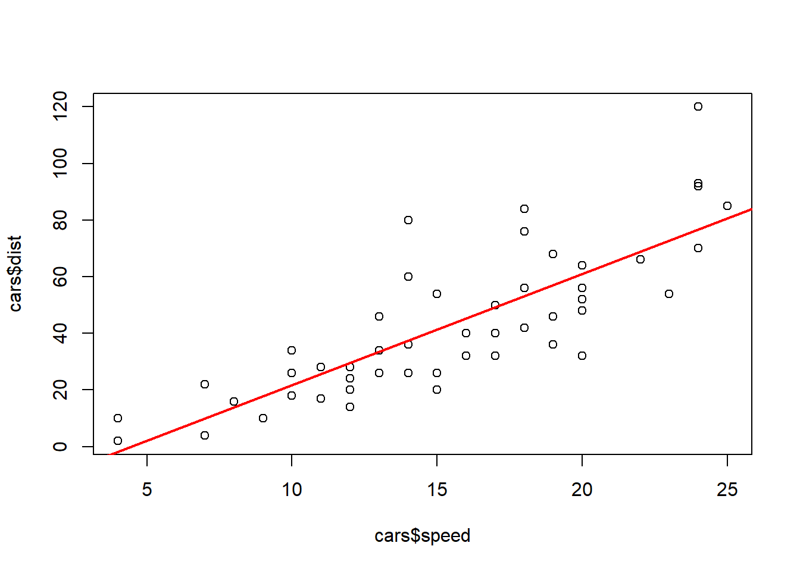
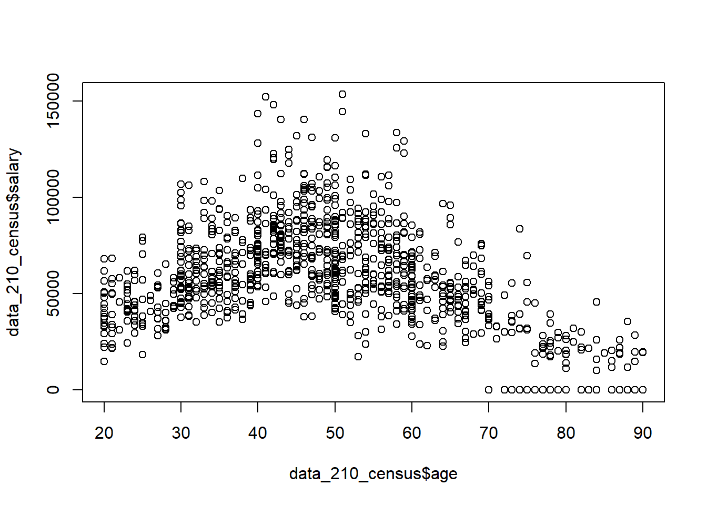

plot(cars$speed, cars$dist)
One of the cool things about data science that you will see in future courses is the ability to make predictions using a dataset. The most basic way this can be done is by drawing a line of best fit that is close to as many data points as possible. We can then use this line to predict where other values may lie. As you go on to study machine learning, you will learn even more powerful ways to make predictions and classifications.
lm() and visualize it with plot() and abline().To understand how this will work without going too far into the theory, we will look at a basic example. Let’s say that we are interested in trying to predict how long (in feet) it will take a car to come to a complete stop given that they are driving a certain speed. Luckily we found a dataset in R that contains some of this information and we can make a visual plot of the data. To do this, we will use the plot() function and specify the two variables we are wanting to look at; speed and distance. We will plot the independent variable on the x-axis (this is the variable we will use to make a prediction), and the dependent variable on the y-axis (this is the variable we want to predict).
plot(cars$speed, cars$dist)
Looking at the plot above, we can see that the data appears to have a linear relationship. This means that when we plot the points they appear to be distributed in roughly a line. Note that they will not always follow an exact line.
To create the line of best fit we will need to do some math. The whole idea of it is to be to identify a line which gets as close to all of the points as possible. Luckily for us we will let R do all of the math, but it is important to still understand what is happening with the algorithm. To do this, we will use the lm() (linear model) function inside of R. We will first pass the dependent variable (the one we are trying to predict) into the function and then we will pass the independent variable (the one we are using to make a prediction) into the function separated by a tilde (~).
lm(cars$dist ~ cars$speed)
Call:
lm(formula = cars$dist ~ cars$speed)
Coefficients:
(Intercept) cars$speed
-17.579 3.932 Using the output above, we are able to build our line-of-best fit. After all, a line requires two pieces of information; a slope and an intercept. This is typically written as \(y=mx+b\). The output above gives us both of those pieces of information. This would allow us to write the line as:
\[ \text{distance} = 3.932\times \text{speed} - 17.579 \] Given this line-of-best fit, we can go about interpreting the different coefficients. Having a slope of \(3.932\) will indicate the distance will increase on average by \(3.932\) units for each additional \(1\) mph increase in speed. This should make sense if we plug in a few ``practice” numbers into the function above (say speeds of 20 and 21) we can see the expected distance will take \(3.932\) feet longer. A positive slope would indicate a positive relationship (both of them increase together), a negative slope would indicate a negative relationship (as one increases the other decreases), and a slope of 0 would indicate no relationship is present (one variable does not impact the other variable).
To interpret the y-intercept we would say that when the speed is \(0\) miles per hour, it will take \(-17.579\) feet for the car to stop. We do not interpret this literally. Instead, it simply represents where the line crosses the y-axis and helps position the model mathematically. So, it is important to note that not every part of the model will have a meaningful interpretation, especially when the intercept corresponds to an impossible or unrealistic value.
Once we have our line-of-best fit created, we can go about making predictions and estimations. To visualize the predictions we can plot both our dataset and the linear model using the abline() function. This will allow us to see the line-of-best fit on top of our data, which will help us verify that we put the variables in the correct order when we built the model.
linear_model <- lm(cars$dist ~ cars$speed)
plot(cars$speed, cars$dist)
abline(linear_model, col="red", lwd=2)
To make predictions we can simply input values into the equation of our model. So, say we were interested in finding the distance it takes to stop if we are driving at 20 miles per hour. We can evaluate the function as:
\[ \text{distance} = 3.932\times 20 - 17.579 = 61.061 \text{ feet}\]
3.932*20 - 17.579[1] 61.061There are a few specific thing that we need to watch out for when we make a line-of-best fit. The first being that we need to make sure our two variables are linearly related. It will not be beneficial to use a straight line to model two variables if they have a non-linear pattern. An example of this is the data_210_census dataset in the MSMU library. We can clearly see below that age and salary do not follow a linear relationship, as the values start increasing and then around age 50 they start decreasing. Therefore, we would want to use a different model (one that would be discussed in a machine learning course) to make predictions on this dataset.
library(MSMU)
plot(data_210_census$age, data_210_census$salary)
Another thing we should be cautious about is that we can only make predictions on the range of values that we used to make our model. When we built our line-of-best fit to model the distance a car will take to stop given our speed, we only used cars going between 4 and 25 miles per hour. Therefore, we would not want to make a prediction about a car going \(60\) miles per hour, because that is too far away from our training dataset. This is called extrapolation, and it is not reliable because we do not know whether the relationship continues outside our data.